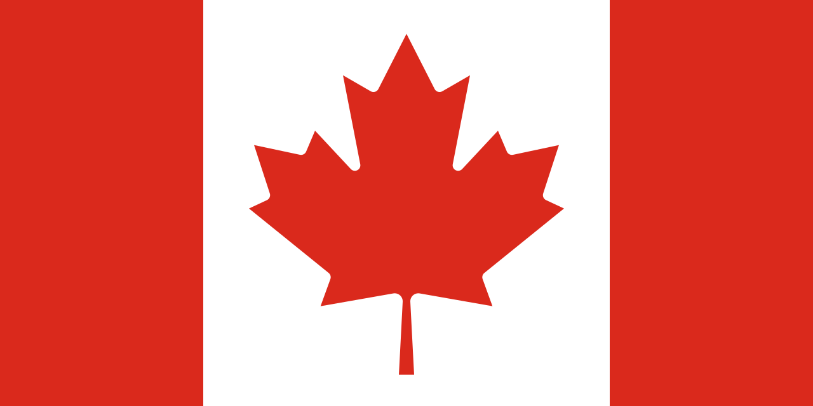

Kanada (Canada, výslovnost [ˈkʰænədə] v angličtině a [kanada] ve francouzštině) je rozlohou druhá největší země světa, rozkládající se v severní části Severní Ameriky. Hraničí se Severním ledovým oceánem (sever), Atlantikem (východ), USA (jih a severozápad) a Tichým oceánem (západ). Kanada vznikla na území osídleném Indiány a Inuity jako unie britských zámořských teritorií a kolonií, z nichž některé byly předtím součástí francouzské koloniální říše. Nezávislost na Velké Británii získala mírovou cestou Zákonem o Britské Severní Americe (anglicky British North America Act) z roku 1867 a Canada Actem v roce 1982. Kanada je federací deseti provincií a tří spolkových teritorií, parlamentní konstituční monarchií. Sama sebe definuje jako zemi dvoujazyčnou (oficiální jazyky jsou angličtina a francouzština), navíc je kupříkladu v teritoriu Nunavut oficiálním jazykem domorodá inuitština. Z průmyslového hlediska jde o technicky vyspělou zemi disponující rozsáhlými přírodními a nerostnými zdroji. Země má úzké politické a ekonomické vztahy s USA, s nimiž má dlouhou vojensky nestřeženou hranici. Jediným dalším státem, u něhož lze smysluplně mluvit o hranici s Kanadou, je Dánsko, od jehož závislého území – Grónska – oddělují kanadské arktické ostrovy jen úzké průlivy.
Název KanadaNázev Canada pochází z řeči prvních národů – konkrétněji kmene Huronů – a zní kanata a do češtiny jej lze přeložit jako „vesnice“, „uskupení vesnic“ či „osídlení“. V roce 1535 použili indiáni toto slovo pro označení osady Stadacona v rozhovoru s Jacquesem Cartierem. Ten je potom začal používat pro označení oblasti okolo své osady – dnes již jako část Québec City. Od roku 1547 se toto označení začalo objevovat na mapách jako označení rozsáhlé okolní oblasti. Tedy původní označení, Nová Francie, se přestávalo používat a Canada byl název území na sever od USA a na východ od Aljašky. Francouzská kolonie Kanada, Nová Francie vznikla podél řeky svatého Vavřince a severně od Velkých jezer. Později získala území Velká Británie, která na něm posléze ustavila dvě kolonie: Horní (Upper Canada) a Dolní Kanadu (Lower Canada), dohromady označované jako Kanady The Canadas. Tyto zanikly v roce 1841, kdy byly sjednoceny v Sjednocenou kanadskou provincii (United Province of Canada). V roce 1867 se Kanada stala konfederací a britským dominiem, přičemž oficiálně byla označována jako Dominion of Canada, případně Canadian Confederation. S rostoucí mírou nezávislosti na Velké Británii se postupně stále častěji vypouštělo ze jména Dominion of. V roce 1982 byl přijat Canada Act, který uvádí jako jediné oficiální jméno země Canada. V témže roce došlo také k přejmenování státního svátku Dominion Day na Canada Day.
| Hlavní město | Ottawa |
|---|---|
| Nejvyšší bod | Mount Logan, Yukon (5959 m. n. m.) |
| Poloha | 56° s. š., 109° z. d. |
| Počet obyvatel | 37 800 000 (2019) 3,5osob/km2 |
| Rozloha | 9 984 670 km2 ( 2. na světě ) |
| Jazyk | Angličtina, francouzština, inuitština |
| Náboženství | Křesťané 67,2 % (katolíci 43,6 %, Sjednocená církev Kanady 9,6 %), muslimové 3,2% |
| Státní zřízení | Federativní konstituční republika (Alžběta II.) |
| Vznik | 1. července 1867 |
| Měna | Kanadský dolar |
Vlajka Kanady
Kanadské palačinky